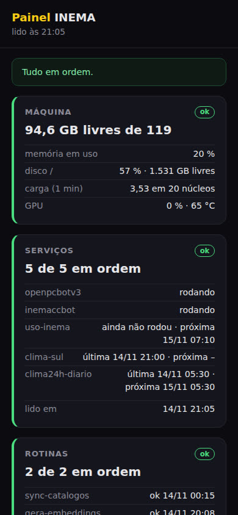

Solo te enteras de que el respaldo se detuvo, el bot dejó de funcionar o el sitio quedó fuera de servicio cuando alguien se queja. Con painel-jarvis, le preguntas a tu asistente de IA (INTELECTO, Claude Code, Codex…) y te muestra qué sigue funcionando y qué dejó de hacerlo.
Quienes dejan cosas funcionando solas en la computadora (un asistente, un respaldo, un robot que publica videos o un sitio) suelen enterarse de que algo se rompió solo cuando alguien se queja. painel-jarvis es un pequeño programa en Python que revisa todo por ti: la memoria y el disco de la máquina, los servicios, las rutinas, los sitios y los cambios en tus proyectos. Puedes verlo en un panel que se abre en el celular como una app, o simplemente preguntarle a tu asistente de IA: «¿qué falló hoy?». Necesitas una computadora con Linux y Python 3.11 o superior.
El problema
Las cosas se detienen en silencio
Una computadora que trabaja sola no avisa cuando se detiene. Simplemente se detiene.
🔇 El servicio se cayó de madrugada
El asistente que responde en Telegram se quedó bloqueado a las 3 de la mañana. Solo lo notas al final de la tarde, cuando te extraña el silencio.
🗓️ La rutina falló y nadie lo vio
El respaldo o la publicación automática dio error, pero quedó oculto en un archivo de registro que nadie abre.
💾 El disco se llenó poco a poco
Día tras día, el disco se fue llenando. Cuando llega al 100 %, todo se detiene de golpe y la reparación lleva más trabajo.
painel-jarvis revisa estas cosas en cada consulta y marca en amarillo lo que requiere atención y en rojo lo que falló. Siempre incluye una palabra que lo indique («atención», «falla»), no solo el color.
Tres formas de usarlo
Un panel, tres puertas
Por dentro es el mismo panel. Tú eliges cómo consultarlo.
1
Pregúntale a tu Jarvis
Si usas INTELECTO, el asistente en Python de INEMA, el panel se convierte en un plugin: suma tres herramientas nuevas y responde «¿qué falló hoy?» con datos reales. cómo conectarlo ↓
2
En cualquier agente de IA
El panel también habla MCP, el «enchufe» estándar que usan agentes como Claude Code, Codex y Cursor para llamar herramientas. Cualquier Jarvis que hable MCP consulta el panel de la misma manera. cómo conectarlo ↓
3
En el celular, como app
Una página con tarjetas, protegida con contraseña, que instalas en la pantalla de tu celular como una app (el nombre técnico es PWA: un sitio que se instala como app). Se abre en pantalla completa, se actualiza sola cada minuto y muestra «sin conexión» cuando se cae internet. cómo conectarlo ↓
Tú: ¿qué falló hoy?
Tu Jarvis: Esto requiere atención: rutina backup: error en la última ejecución (14/11 03:00) · disco / al 91 %.
Cómo se ve
El panel en acción
Capturas del panel funcionando en la computadora de INEMA el 14/11/2026. Toca una tarjeta para abrir el detalle.
En la computadora: seis paneles. La franja superior dice «Todo en orden» o enumera lo que requiere atención. (Por ahora, los mensajes del programa y el panel web están en portugués.)

En el celular: un panel a la vez, instalable como app (Chrome → ⋮ → Instalar app).
Parte técnica
El kit: para quienes quieren instalarlo y conectarlo
De aquí en adelante viene la parte técnica: los paneles, la instalación y el paso a paso. No necesitas esta parte para entender lo anterior.
Qué es
Seis paneles, todos de solo lectura
Cada sección del archivo painel.toml activa un panel. painel-jarvis nunca cambia nada en tu máquina: solo lee.
Panel
Qué muestra
Se pone amarillo/rojo cuando
maquina
memoria, disco, carga, GPU (si existe nvidia-smi)
queda menos del 10 % de memoria libre; el disco llega al 90 % o más
servicos
servicios y timers de systemd (el «administrador de servicios» de Linux)
falla un servicio, se detiene un timer o no existe un servicio
rotinas
rutinas de cron o scripts, según el archivo de registro
hay errores en las últimas líneas del registro o lleva más tiempo detenido del permitido
sites
una visita rápida a cada sitio
un sitio queda fuera de servicio
git
lo que hicimos: commits de las últimas 24 h y de los últimos 7 días por proyecto
—
uso
datos de cualquier archivo JSON que genere otro script (visitas, ventas, cola)
el archivo lleva más tiempo detenido del permitido
El panel uso conecta tus datos: tu script los recopila y guarda en un JSON; el panel solo lee el archivo. Así, el panel no necesita ninguna clave de servicio.
Cómo funciona
Un núcleo, tres salidas
Los recolectores leen la máquina; el núcleo lo reúne todo en tarjetas; cada puerta entrega las mismas tarjetas a su manera. Si un recolector falla, su tarjeta aparece como «sin lectura» y el resto sigue funcionando.
No hace falta instalar bibliotecas adicionales: el panel usa solo lo que ya incluye Python.
Linux + Python 3.11+
Ubuntu 24.04 ya incluye Python 3.12. En Ubuntu 22.04 (Python 3.10), instala una versión más reciente de Python primero: sudo apt install python3.11 y luego pipx install --python python3.11 ….
python3 --version
pip
Para instalar el paquete directamente desde GitHub.
python3 -m pip --version
Opcional
INTELECTO v2.3+ para el plugin; un agente con MCP; un túnel (Cloudflare Tunnel o Tailscale) para abrir el panel fuera de casa.
Guía de uso · paso a paso
De cero a «¿qué falló hoy?»
Los comandos de abajo son los que usa el proyecto. En una máquina nueva, lleva unos 10 minutos.
1
Instala el paquete
La forma más sencilla es usar pipx, que instala programas de Python sin desordenar el sistema y coloca el comando painel-jarvis en ~/.local/bin (la misma ruta que usa el servicio del paso 7). En Ubuntu: sudo apt install pipx y luego pipx ensurepath (cierra y vuelve a abrir la terminal).
pipx installgit+https://github.com/inematds/painel-jarvispainel-jarvis --version # 1.0.1# como alternativa, en un entorno virtual:python3 -m venv ~/.venv-painel && source ~/.venv-painel/bin/activate
pip installgit+https://github.com/inematds/painel-jarvis# (en el venv, el comando está en ~/.venv-painel/bin/painel-jarvis: usa esta ruta en el paso 7)
2
Indica qué debe vigilar
El ejemplo ya activa el panel de la máquina; las demás secciones vienen comentadas, con nombres de ejemplo. Para activar una, quita el # del inicio de sus líneas y reemplaza los nombres por los de tus servicios, registros, sitios y carpetas.
Una línea por panel y luego solo lo que requiere atención. El símbolo indica el estado: ✓ en orden, ! atención, ✕ falla, ? sin lectura (el cuadro no pudo leer sus datos, por ejemplo, el JSON del cuadro uso todavía no existe). ¿Activaste una sección nueva? Vuelve a ejecutarlo para revisarla. (Por ahora, los mensajes del programa y el panel web están en portugués.)
painel-jarvis cartoes
# Painel do Jarvis: 1 ponto(s) de atenção
# ✓ Máquina: 94,6 GB livres de 119
# ! Serviços: 1 de 2 em ordempainel-jarvis falhas
4
Conéctalo a INTELECTO
El plugin debe estar en el mismo Python que INTELECTO v2.3 o superior: instala ambos en el mismo entorno virtual o, si instalaste INTELECTO con pipx, usa pipx inject intelecto git+https://github.com/inematds/painel-jarvis. Después activa el plugin por nombre. Añade painel_resumo, painel_falhas y painel_quadro. Un plugin nunca reemplaza las herramientas que vienen de fábrica.
INTELECTO_PLUGINS=painel intelecto# o, de forma permanente: "plugins": ["painel"] en ~/.intelecto2/config.json
5
O conéctalo a cualquier agente con MCP
El panel se convierte en un servidor MCP desde la terminal (stdio). En Claude Code basta con una línea; en otros agentes, usa el comando painel-jarvis mcp en la configuración de servidores MCP.
claude mcp add painel -- painel-jarvis mcp
# después, en el agente: "usa el panel y dime qué falló hoy"
6
Abre el panel en el navegador
Sin contraseña, solo acepta conexiones de la propia máquina: incluso --bind 0.0.0.0 vuelve automáticamente a 127.0.0.1 y te avisa en la terminal. Para abrirlo desde otro dispositivo, define una contraseña (12 caracteres o más; queda en ~/.config/painel-jarvis/senha.json) y habilita el acceso en la red.
painel-jarvis web # http://127.0.0.1:8790/painel-jarvis senha
painel-jarvis web --bind 0.0.0.0 # en la red de casa, con inicio de sesión
7
Déjalo funcionando e instálalo en el celular
Define la contraseña primero (paso 6): sin ella, el servicio solo escucha en 127.0.0.1 y no podrás abrirlo en el celular. El bloque de abajo crea el archivo del servicio y lo activa; enable-linger hace que el servicio arranque al iniciar la computadora y siga funcionando después de que cierres la sesión. Para abrirlo fuera de casa, coloca un túnel con HTTPS delante del puerto 8790. En el celular: Chrome → ⋮ → Instalar app (en iPhone: Safari → Compartir → Pantalla de inicio).
Solo lee y solo con contraseña fuera de la máquina
🔒 Contraseña y sesión
La contraseña se guarda como scrypt; una cookie que JavaScript no puede leer (HttpOnly); 5 intentos fallidos bloquean el acceso durante 15 minutos. Sin contraseña, el panel solo escucha en 127.0.0.1.
👁️ Solo lectura
Las herramientas no ejecutan nada que el agente elija; en MCP están marcadas como de solo lectura. El service worker no guarda datos: sin red, muestra «sin conexión».
🌐 HTTPS mediante túnel
El panel no ofrece HTTPS por sí solo. Para acceder desde internet, usa un túnel con HTTPS (Cloudflare Tunnel, Tailscale).
🔑 Sin clave de servicio
El panel no llama a API de terceros. Los datos de servicios externos llegan por el panel uso, desde un JSON que guarda tu script.
Hoja de ruta
Qué sigue
v1.0
HoySeis paneles, plugin de INTELECTO, servidor MCP y panel web instalable con contraseña.
próximo
Alerta activaEnviar una alerta a Telegram cuando un panel se ponga rojo, en lugar de esperar a que alguien pregunte.
después
Más panelesContenedores Docker y colas de tareas, con el mismo formato de tarjeta.